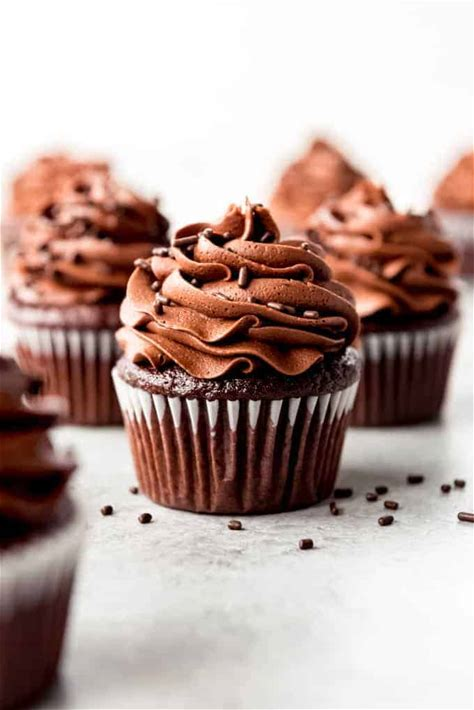

Chocolate Cupcakes Recipe
Chocolate Cupcakes Recipe
Chocolate Cupcakes from GFP

Ingredients
- 1 ½ cups granulated sugar
- 2 cups all-purpose gluten-free flour blend
- ¾ cup unsweetened cocoa
- 1 ½ teaspoons gluten-free baking powder
- 1 ½ teaspoons baking soda
- 1 teaspoon salt
- 2 large eggs
- 1 cup milk
- ½ cup vegetable oil
- 1 ½ teaspoons gluten-free vanilla extract
- ¾ cup boiling water
Instructions
- Preheat oven to 350°F (180°C). Position rack in center of oven. Line two 12-serving cupcake pans with paper liners; set aside.
- In a large mixing bowl, stir together sugar, flour, cocoa, baking powder, baking soda, and salt until there are no visible clumps.
- Add eggs, milk, oil, and vanilla. Beat with a mixer on medium speed for two minutes.
- Stir in boiling water.
- Spoon batter evenly into cupcake wells. Bake for 20 to 22 minutes, or until a toothpick inserted in the center comes out clean.
- Remove from oven and let cool in the pan for 5 minutes, then remove from pan and let cool on a rack.
- Store in an airtight container at room temperature for up to three days, or in the refrigerator for up to a week.